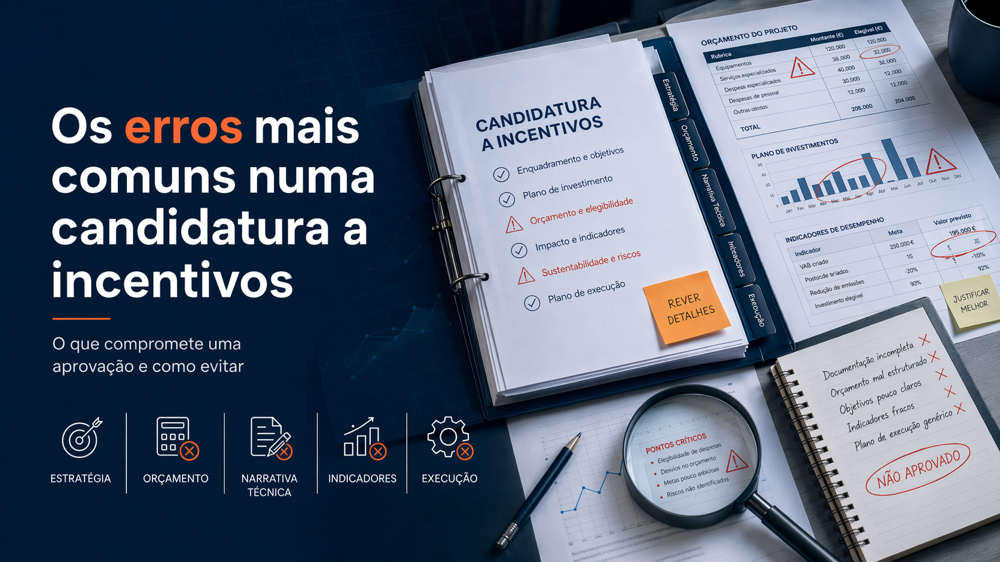
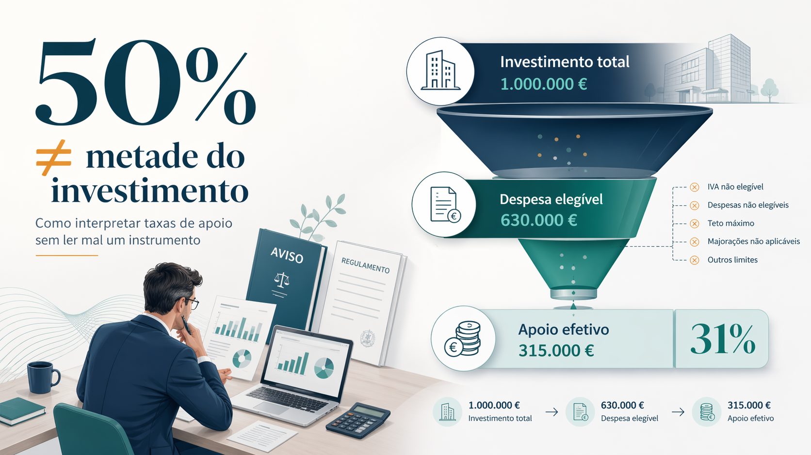
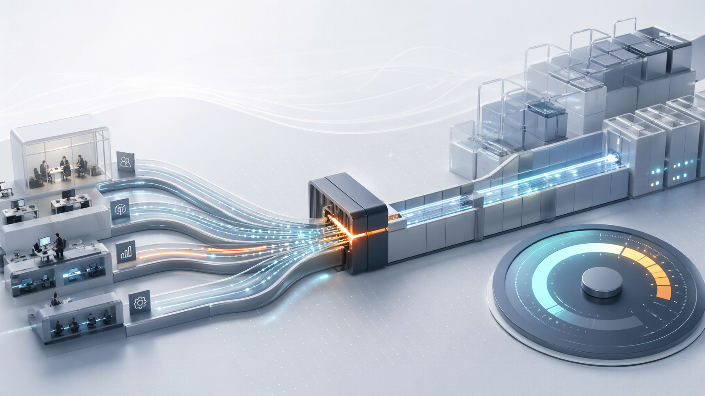
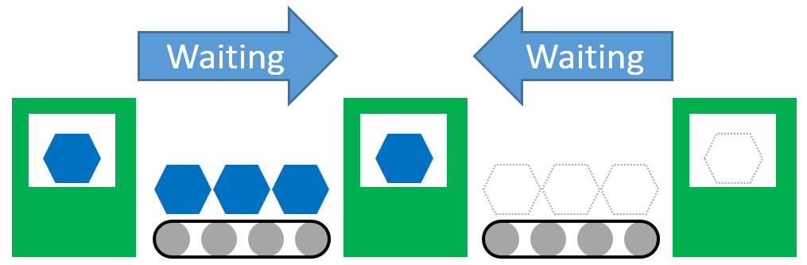
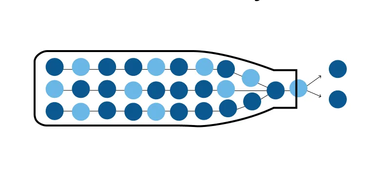

Mercados
9 min
Defesa e aço: a nova política industrial europeia está a emergir
A UE travou quase metade das importações de aço e aplicou tarifas de 50 por cento ao excesso. O que muda para as empresas.
Análise, perspetiva e guias práticos sobre capital, financiamento e crescimento empresarial.
A UE travou quase metade das importações de aço e aplicou tarifas de 50 por cento ao excesso. O que muda para as empresas.
Aumentar capacidade é decisão de mercado e financeira. Como validar a procura antes de investir, e evitar o peso do excesso.

Digitalizar não é automatizar. Perceba o que distingue os dois conceitos e como cada um transforma operações.


Robotização, modularização e novos modelos de negócio estão a redesenhar a construção europeia. O que significa para quem opera no setor em Portugal.


95,5 mil milhões de euros para I&D e inovação. O que é o Horizonte Europa, como funciona e que oportunidades cria para empresas portuguesas.

Nearshoring, tarifas e blocos rivais. A globalização eficiente acabou. O que significa para quem gere empresas em Portugal?
A UE enfraqueceu partes centrais das leis de sustentabilidade corporativa. O que muda para as empresas portuguesas.
Guia prático sobre o primeiro regulamento mundial de IA: obrigações, prazos e impacto concreto para empresas que usam ou desenvolvem inteligência artificial.

Quando faz sentido levantar capital, quanto pedir, que investidores abordar e o que esperar de um term sheet.

Análise ao pacote tarifário de abril de 2025 e às implicações concretas para exportadores e cadeias de valor europeias.

A UE mobiliza 800 mil milhões de euros para defesa. O que isto significa para a indústria e o capital privado europeu.

Produto, processo, modelo de negócio, organizacional, incremental, disruptiva. Um guia sobre os tipos de inovação e o que cada um significa.

O que distingue investigação e desenvolvimento de uma melhoria normal. Critérios, exemplos e implicações para quem candidata a SIFIDE ou PT2030.

Automatizar sem medir é institucionalizar o caos. Os indicadores que têm de estar no papel antes de qualquer investimento.

Um filtro prático para distinguir procura verdadeira de narrativa atraente, antes de comprometer capital na entrada num novo mercado.

Nem toda a contratação é sinal de crescimento. Um guia prático para distinguir capacidade nova de encobrimento de problemas.

Os erros mais frequentes em candidaturas não estão no preenchimento. Estão na preparação, no orçamento e na narrativa técnica.

Uma taxa de 50% não significa metade do investimento. Como ler avisos e regulamentos sem transformar um número em promessa.
Adiantamentos, reembolsos e saldo final. Como funcionam os pedidos de pagamento no PT2030 e o que cada modalidade exige da empresa.

Um conceito que parece técnico mas que determina margens, decisões de investimento e a capacidade real de responder ao mercado.

A sigla tornou-se omnipresente e pouco clara. Um guia prático para perceber o que uma PME deve fazer, e o que pode ignorar por agora.

Na fábrica, o gargalo raramente é a máquina mais cara. Um método em seis passos para o encontrar e decidir onde investir.

Em serviços os gargalos escondem-se. Um método em cinco passos para encontrar onde a operação realmente trava.
O RGPD não é apenas uma obrigação legal. Define como as empresas gerem dados pessoais, com coimas que chegam a 4% do volume de negócios global.


Um guia prático para PMEs que querem medir o que realmente importa e tomar decisões mais rápidas e informadas.
O Estado compra mais de 15 mil milhões de euros por ano. A maioria das PME nunca concorreu. Um guia prático sobre como funciona a contratação pública.